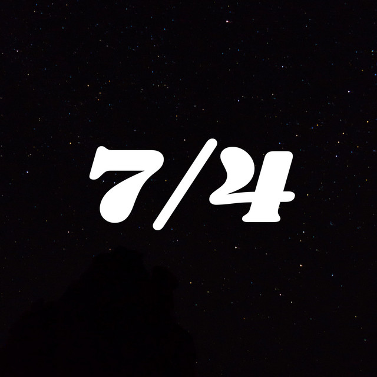

Zev Kane
Dartmouth '15 | WRTI | 7/4 Podcast
Program Director, Radio Host, Music Curator, Writer

A weekly selection of new music worth getting to know
Released (almost) every Thursday on Spotify
Released (almost) every Thursday on Spotify